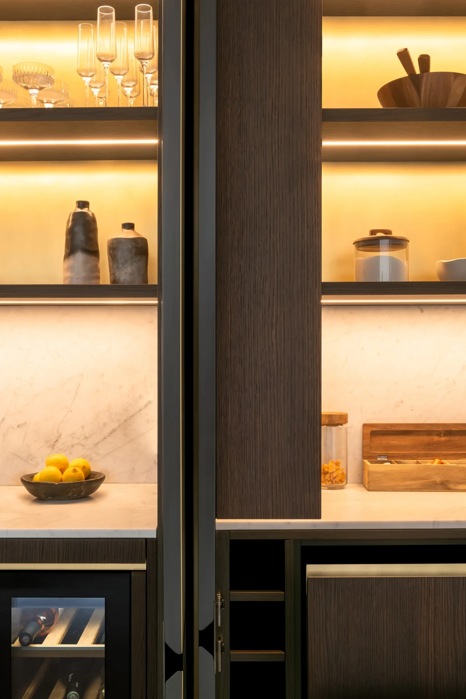

London · Bespoke joinery
Westover
Road.
Project 03 / Crafted rhythm
Deep tone.
Fine grain.
Dark timber, illuminated shelving and pale stone create a quiet architectural rhythm throughout the home.
A Nura principle
 Back to selected work
Back to selected work
London · Bespoke joinery
Dark timber, illuminated shelving and pale stone create a quiet architectural rhythm throughout the home.
A Nura principle